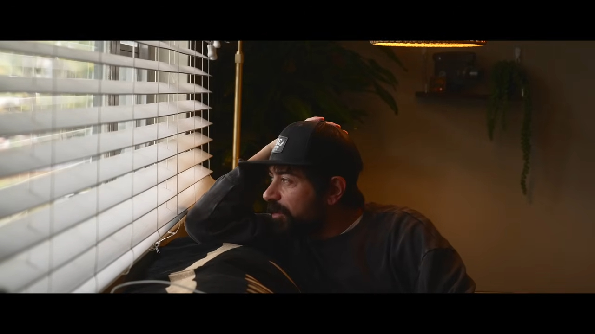
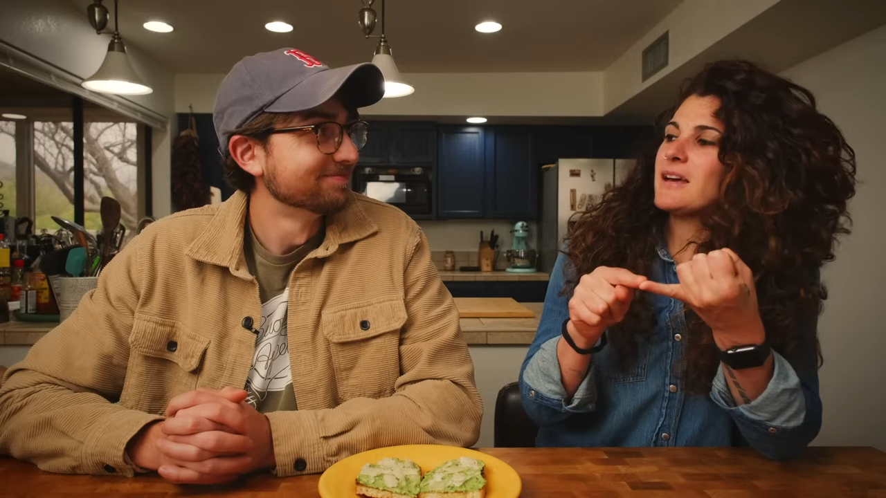
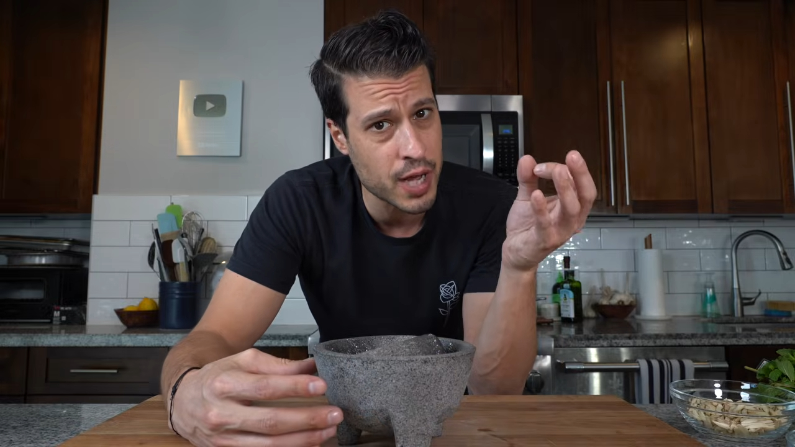
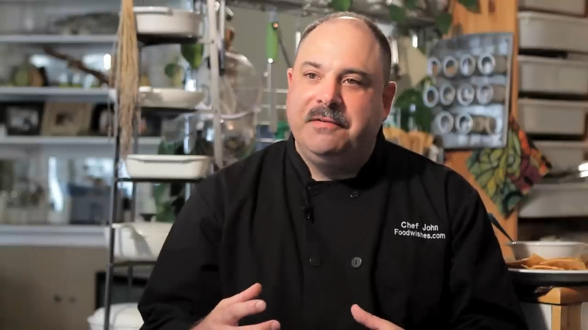

Culinary heroes of youtube
Having the right personality on your pop up on your screen can be like comfort food in it's own way. Here's a few of my favorites I would like to bring to your table.
Mile Zero Kitchen

"Dani" never says any of the things he bakes, sautees, or fries are easy, but by the end of a video watching pillowy, airy focaccia shimmering in olive oil, confettied in rosemary and coarse salt you are convinced that you might enjoy making it yourself. Each video is a love letter to Authentic Italian food and film. Each shot brings you right up to the cutting board. Slow motion zoom lets you see every plop of tomato sauce and every pinch of oregano as
Pasta Grammar

Not Another Cooking Show

Food Wishes
